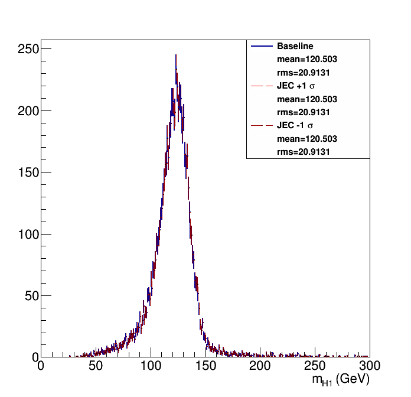
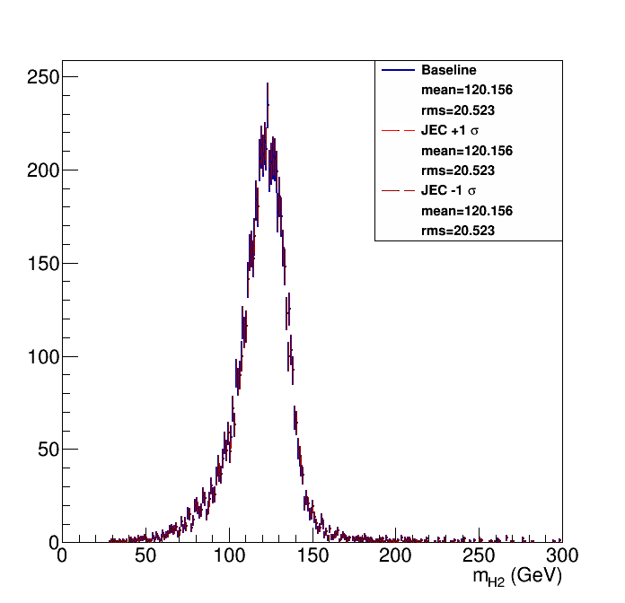
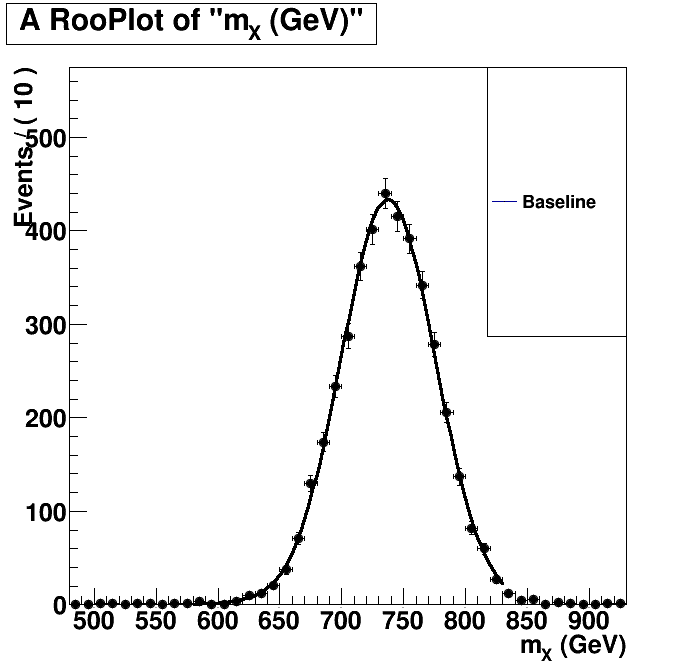
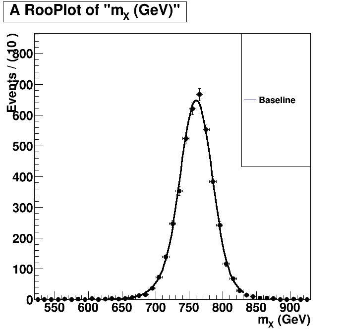

| Higgs 1 mass  | Higgs 2 mass  |
Without Kin-Fit. Fitted to an Exp-Gauss-Exp function.=== Baseline plot === |
With Kin-Fit. Fitted to an Exp-Gauss-Exp function.=== Baseline plot === norm = 962.541 sg_p0 = 760.232 0.449214 sg_p1 = 24.6133 0.418216 sg_p2 = 1.62807 0.138139 sg_p3 = 1.43589 0.056557 btag lnN 1.0861 - |